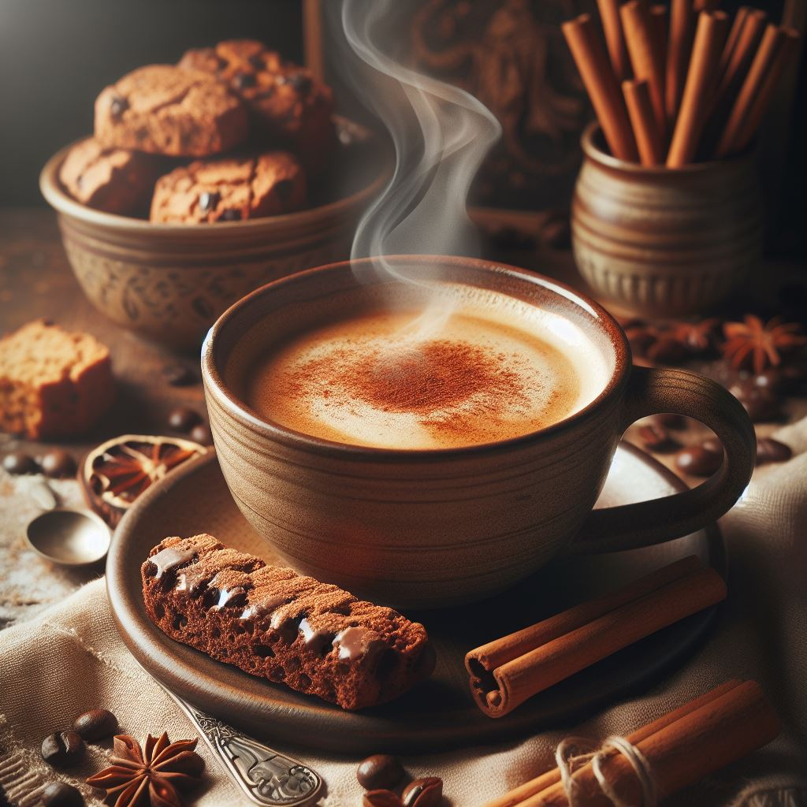

Produtos disponível
Café Gourmet
DESCRIÇÃO:
Um café premium, cultivado em condições ideais e cuidadosamente selecionado para oferecer uma experiência de sabor excepcional, com notas distintas e aroma envolvente !
Café Especial
DESCRIÇÃO:
Um café cuidadosamente selecionado e cultivado, com sabores distintos e aromas envolventes. Uma experiência única em cada xícara!

Café com canela
DESCRIÇÃO:
Uma combinação irresistível de café encorpado com um toque quente e aromático de canela, proporcionando uma bebida reconfortante e cheia de sabor!
Café Tradicional
DESCRIÇÃO:
Uma escolha clássica e reconfortante, o café tradicional oferece uma bebida aromática e encorpada, perfeita para começar o dia ou para um momento de pausa relaxante!